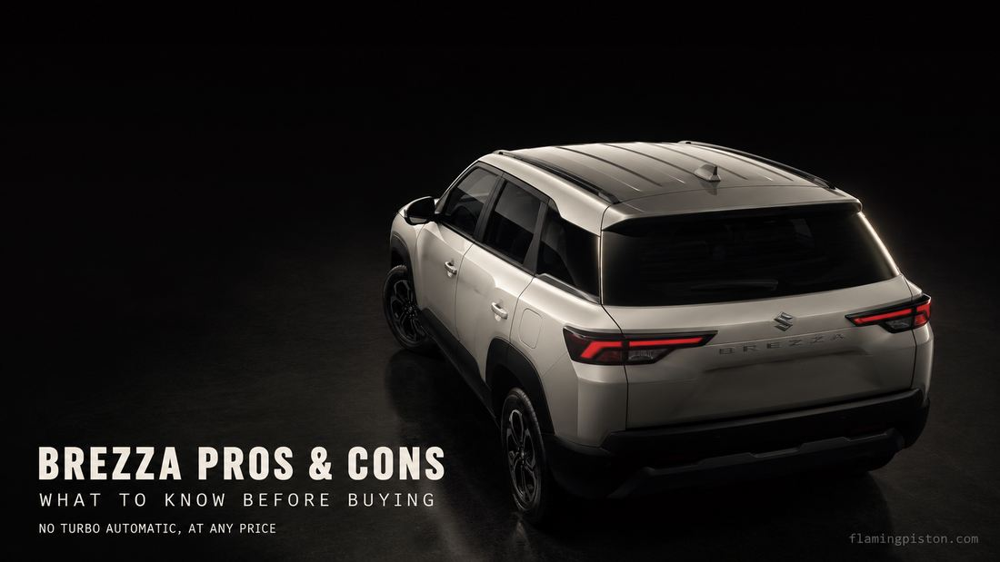

Maruti Brezza Pros and Cons: 6 Strengths and 6 Drawbacks (2026)

AI illustration: FlamingPiston
Published Sep 3, 2026 · Updated Nov 23, 2026
5 min read
Category: Compact SUVs
The 2026 Brezza does the basics very well: a roomy cabin, a real automatic, a CNG version that no longer eats the boot, and a five-star Bharat NCAP rating. Its weak points are just as clear: the turbo has no automatic, there is no spare wheel, no ADAS and no digital instrument cluster. Here is each one, with the source.
Pros
- A proper automatic. The 1.5 petrol comes with a six-speed torque-converter automatic, not an AMT, from ₹10.61 lakh.
- CNG without losing the boot. The CNG tank now sits under the car, so the CNG Brezza keeps the full 328-litre boot, from ₹9.45 lakh.
- Five-star Bharat NCAP rating. 30.41/32 for adults and 43/49 for children, with a perfect side-impact score. Six airbags and ESP are standard on every version.
- Space for three in the back. Autocar India rates the Brezza one of the few compact SUVs that can seat three adults across the rear in comfort.
- A cheap way into a turbo. The 1.0 turbo is the least expensive engine in every trim, from ₹7.55 lakh, with 170 Nm against the 1.5’s 139 Nm.
- Low routine servicing costs. V3Cars estimates ₹17,092 for the first five years or 50,000 km, with three labour-free services. See our maintenance cost guide.
Cons
- No automatic with the turbo. The 1.0 turbo is manual-only on every trim; the automatic is 1.5 petrol only. See turbo vs 1.5 petrol.
- No spare wheel on any version. Only a puncture repair kit and inflator, a real concern on long highway trips.
- No ADAS. The ZXi Turbo and ZXi+ have blind-spot and cross-traffic warnings, but nothing that brakes or steers. The Nexon offers Level 1 ADAS on its top automatic.
- Analogue dials, no powered seats. Autocar India notes these are missing, along with a panoramic sunroof, which some rivals offer.
- Not exciting to drive. Autocar India found the steering disconnected and the body top-heavy in corners, and the ride decent rather than good.
- The rating does not cover CNG. Bharat NCAP lists only the petrol and turbo versions as rated. See our safety guide.
Who the Brezza suits
The Brezza suits families who want a roomy, easy, low-cost compact SUV and have already decided they want either a conventional automatic or CNG. It suits less well anyone who wants a turbo automatic, ADAS, a spare wheel or the latest cabin technology; the Tata Nexon covers several of those. For the full verdict and prices, read our Brezza review.
What Owners Say
The facelifted Brezza went on sale in July 2026, so owner reports are still early and most cover under 2,000 km. On 23 November 2026 we read owner posts on Team-BHP, CarWale and CarDekho, leaving out test drives, posts about the older model, duplicate reviews and anyone who had not bought or driven the car. These are owners’ experiences, not measured results; we say how many owners each point rests on.
- Comfort (pro): the most common praise. At least seven owners across CarWale, Team-BHP and CarDekho mention the comfortable seats, ride or long-distance comfort.
- The turbo is easy to drive (pro): six turbo owners across all three sites find it tractable in traffic and easy to overtake with.
- Plain interior (con): two CarWale owners find the cabin dated or behind rivals’; one calls it not modern but durable.
- No spare wheel (con): one owner each on Team-BHP and CarWale names it as the main drawback.
- Steering and brakes (con): one Team-BHP owner finds the steering artificial and the brakes spongy.
Owners largely agree with our list. The one they add is the plain interior, which goes with the analogue dials and missing powered seats we note above.
FAQs
What is the biggest drawback of the Maruti Brezza?
For many buyers, that the 1.0 turbo-petrol comes only with a manual gearbox. If you want an automatic, you have to take the 1.5 petrol, which Autocar India found less punchy, and which costs over ₹2 lakh more than the equivalent turbo manual.
Does the Brezza have a spare tyre?
No. Since the 2026 update, no Brezza comes with a spare tyre, only a puncture repair kit and inflator. Maruti dropped it when the CNG tank moved under the car.
Is the Brezza’s ride comfortable?
Reasonably. Autocar India says it rides comfortably enough but could have been better, and that the car feels top-heavy in corners with disconnected steering.
Does the Brezza have ADAS or a digital instrument cluster?
Neither. It has analogue dials with a colour info display (and a head-up display on the ZXi+), and sensor-based blind-spot and cross-traffic warnings on the ZXi Turbo and ZXi+, but no ADAS.
What are the Brezza’s biggest strengths?
A six-speed torque-converter automatic, a CNG version that keeps the full 328-litre boot, a five-star Bharat NCAP rating (petrol and turbo), a roomy cabin that seats three across the rear, and low routine service costs.
More in the Brezza series: Full Review · Real-World Mileage · Variants Explained · Automatic Review · CNG Review · Turbo vs 1.5 Petrol · Maintenance Cost · Boot Space · Safety & NCAP · vs Tata Nexon · vs Fronx · vs XUV 3XO CNG
Sources
- Autocar India: 2026 Maruti Suzuki Brezza facelift review
- Autocar India: Brezza Turbo long-term review, 1,000 km report
- Bharat NCAP: Maruti Brezza rating (official)
- Maruti Suzuki: New Brezza brochure, features by variant and specifications (official, PDF)
- CarDekho: Maruti Brezza prices and variants
- V3Cars: Maruti Brezza maintenance cost
Owner discussions
- Team-BHP: 2026 Maruti Suzuki Brezza facelift review, owner posts
- CarWale: Maruti Brezza owner reviews
- CarDekho: Maruti Brezza user reviews
Links checked 23 November 2026. Prices are ex-showroom as listed on that date. Driving impressions and test figures are other publications’ and are named in the text; we have not driven the car. Owner reports were read on 23 November 2026; we do not show usernames.
Read Next